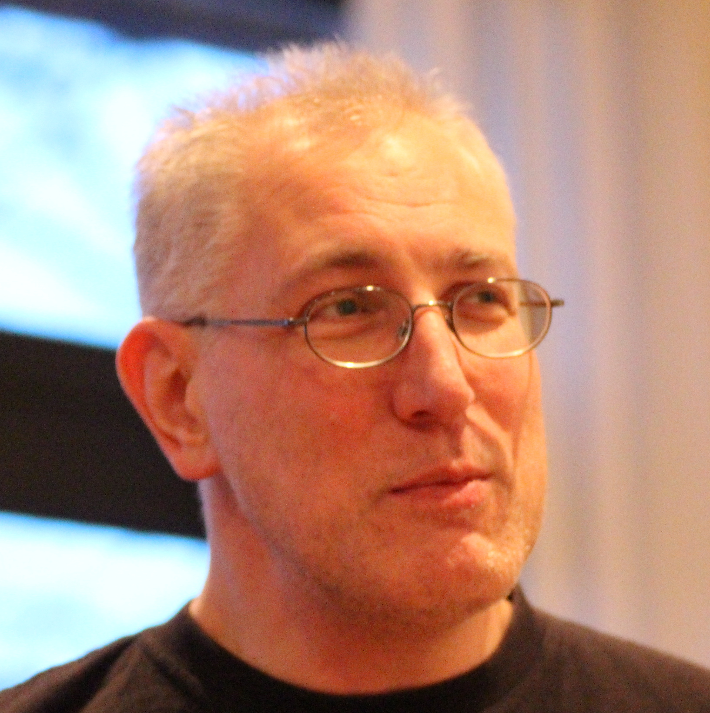

Bruce Scharlau
I\'m a senior lecturer at the University of Aberdeen always looking for opportunities to use my skills coaching people in service design, software development and facilitating events for organisations. I\'m also always looking for opportunities for students. Maybe you need interns for a term or summer? I am also a trustee with Code The City, which hosts the ODI node for Aberdeen, and organises civic co-design events around open data. In doing my work at university and other organisations I use a variety of engaging approaches such as Lego Serious Play, and other interactive creative solving processes such as CoCreAct. Please get in touch if you think I might be able to help you or your organisation.
Website: http://homepages.abdn.ac.uk/b.scharlau/pages/
Twitter: @scharlau